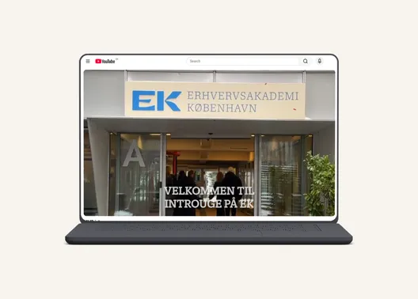
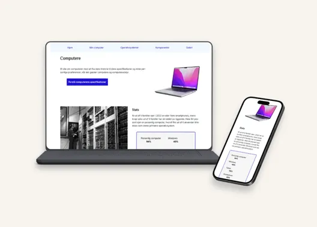
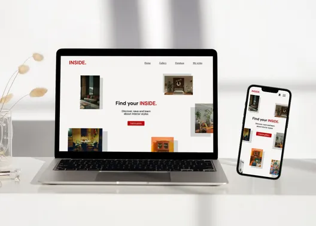
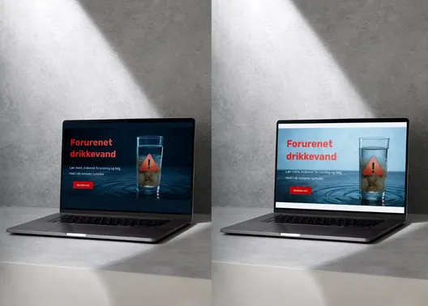
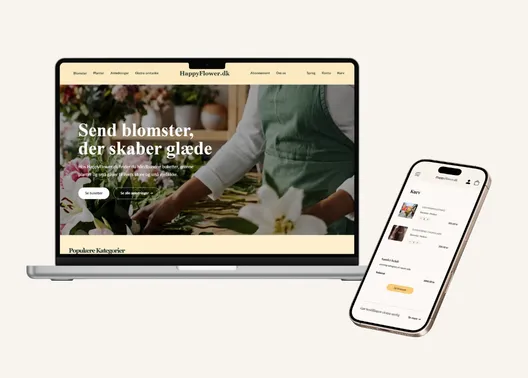
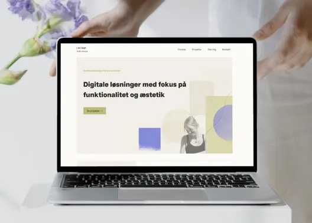

Projekter
Her finder du en oversigt over de temaer og projekter, jeg har arbejdet med på 1. semester.
I hvert tema arbejdede jeg med et større projekt samt mindre opgaver. Jeg har valgt at fokusere portfolioet på de større projekter, fordi de samler den viden, de metoder og de værktøjer, jeg har arbejdet med i temaet.
Oversigt over projekter
Nedenfor ses et overblik over projekterne fra hvert tema. Klik på et projekt for at få indblik i opgaven, min løsning, min proces og mine refleksioner omkring læring.
Tema 1
Introuge

Introduktion til multimediedesign, fagområder, digitale værktøjer og rollen som multimediedesigner.
Se mere →Tema 2
Grundlæggende web

Udvikling af et responsivt website med HTML, CSS, semantisk markup og mobile-first principper.
Se mere →Tema 3
Grundlæggende UI/UX

Research, prototyping og brugertest med fokus på brugerbehov, struktur og design.
Se mere →Tema 4
Grundlæggende brugergrænseflade

Videreudvikling af brugergrænseflader med JavaScript, CSS, SVG, interaktion og dark-mode.
Se mere →Tema 5
Grundlæggende indhold

Gruppeprojekt omredesign af et virksomhedssite med fokus på projektstyring, SCRUM og produktion af digitalt indhold.
Se mere →Tema 6
Portfolio

Udvikling af et personligt portfoliowebsite med fokus på proces, projekter og læring fra 1. semester.
Se mere →